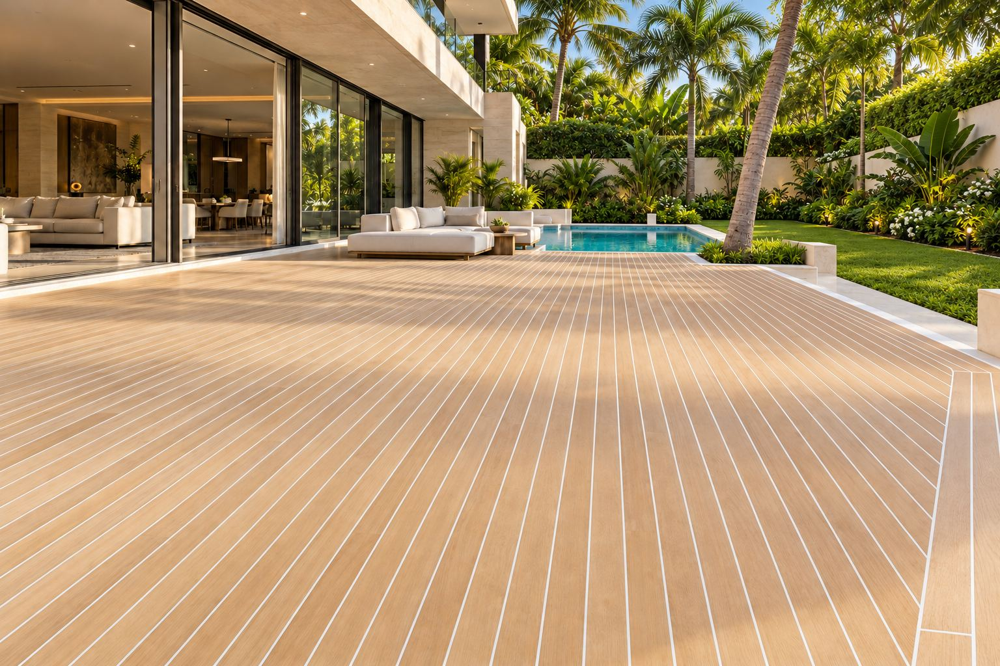
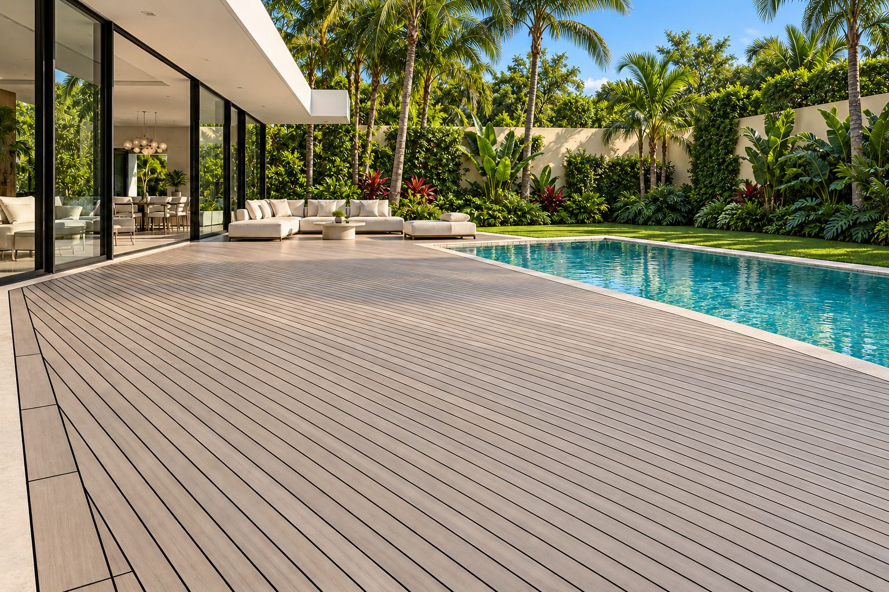
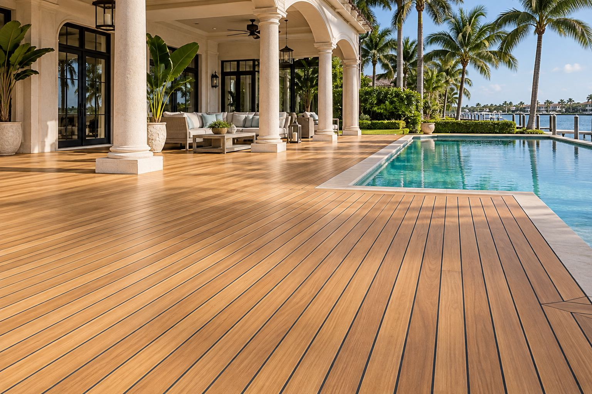
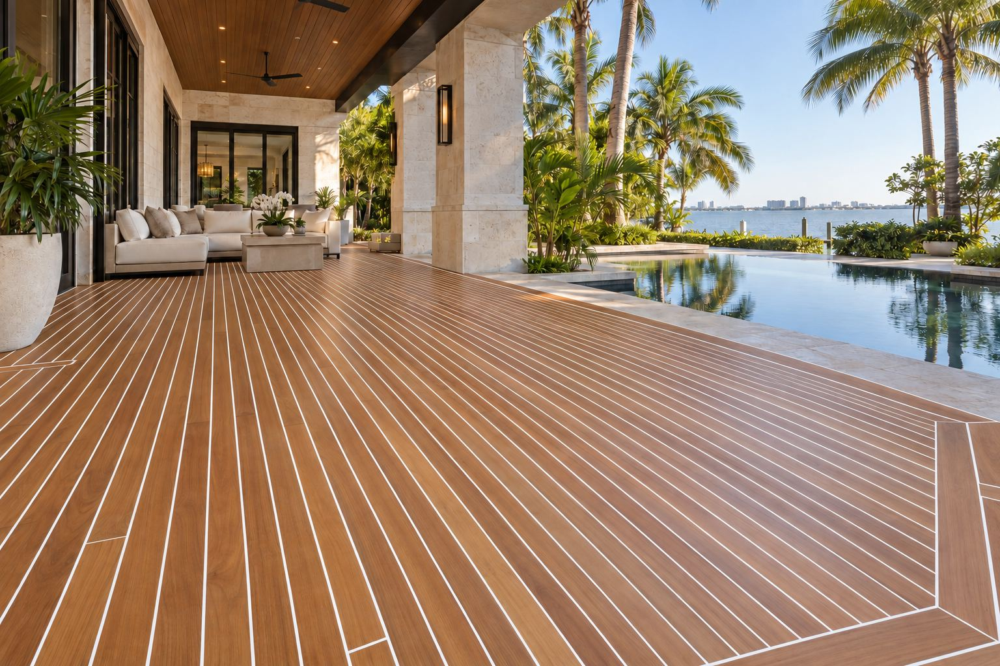
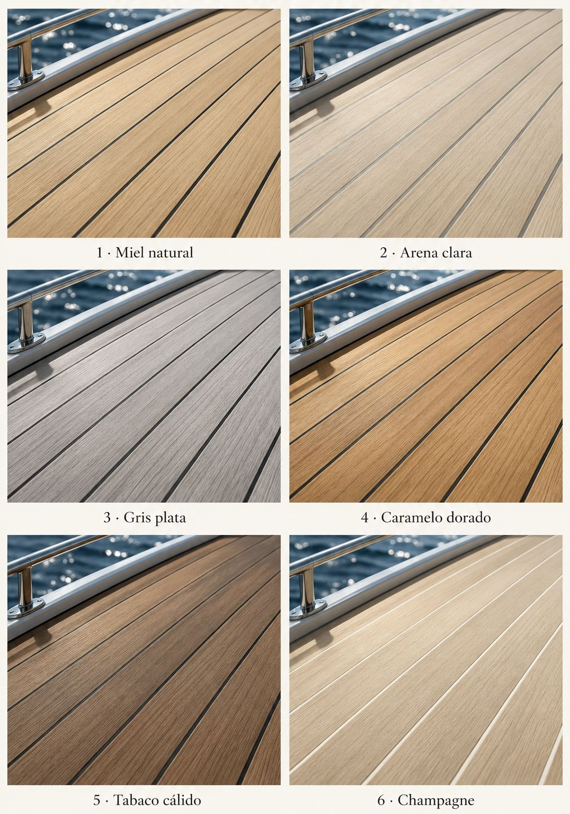
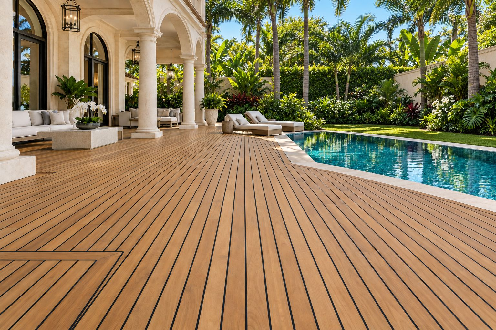
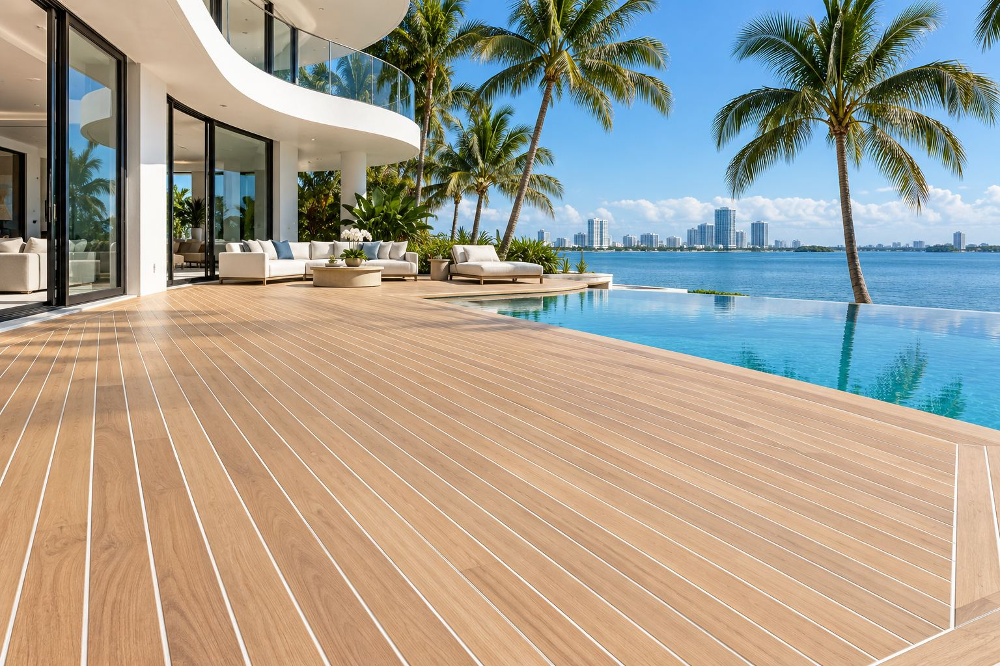

Teak Flooring.
The finish of a yacht deck, made for your home.
Teak has graced the decks of the world's finest yachts for generations, because it stands up to water and holds its shape in humid air far better than most woods. Yet very few companies offer it for the home. We design teak decking in Miami for terraces, pool decks, and waterfront homes. Every board is custom made by our team in Florence and installed by our installation team in Miami.
Request a Private ConsultationClients come to us when they…
- Want their outdoor spaces to feel as refined as their interiors.
- Live on the water and want a deck made to last through years of sun, salt air, and humidity.
- Want the elegance of a yacht deck around their pool or terrace.
- Want something few homes in Miami have.
How we design your teak flooring.
Every teak floor begins with a conversation about how you use your outdoor spaces, from quiet mornings to evenings with guests. Our in-house design team plans the layout, the pattern, and every edge and transition, or we build from the plans of your own architect or designer. Because every board is custom made, your floor is made exactly to the size and shape of your space.
Why clients choose Renaissance.
Teak is made for a life near the water. It resists moisture naturally and moves far less than other woods as the humidity rises and falls, so it stays beautiful for many years, even on homes along the bay or the ocean. Our team in Florence makes every board to order with exceptional care, to a standard of quality few in Miami offer and one you can feel underfoot.
Renaissance is based in both Florence and Miami, so one company designs, makes, ships, and installs your teak floor, and you always know who to call. We take on only a few homes at a time, so your project has our full attention and comes together in remarkable time.
Teak decking often carries a larger project outdoors. Many of our clients pair it with a kitchen, bathrooms, or a complete interior renovation, so the home feels as refined outside as it does inside.
Explore Areas of CraftHow it works.
- 1
Consultation
We meet to understand your home and what you want your outdoor spaces to be.
- 2
Design
We visit your home to take precise measurements, then our in-house design team develops your teak floor, or we work from your architect's or designer's plans. You approve every drawing before anything is made. The design fee is credited toward your teak floor once you move forward with us.
- 3
Made in Italy
Our team in Florence makes every board to order with exceptional care and checks each detail before it leaves Italy. Depending on the scope of your project, this stage takes an average of four to six weeks.
- 4
Shipping to Miami
We arrange every part of the journey from our workshop in Florence to your home. By cargo ship, your teak floor arrives at your home in about four weeks, ready for installation to begin. By cargo plane, it can be there within one week.
- 5
Installation
Our professional installation team installs your teak floor and walks through the finished space with you.
Ideas for your teak flooring.
These are reference images, not completed Renaissance projects. They show styles we can create for you and are here to spark ideas for your own outdoor spaces.







Teak decking in Miami, made to last by the water.
Teak decking extends your home outdoors with the same quality you expect inside, and it is made to last on homes along the water. Each deck is custom made by our team in Florence and installed by our professional installation team in Miami.
Ready to step outside onto something extraordinary?
Your teak floor begins with a conversation. Tell us about your home, and we'll arrange a private consultation.
Request a Private Consultation